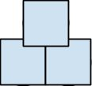

Sample Questions
Here are ten estimation questions which are similar to what you might see in an interview. We have provided solutions for these problems, but you should think of these solutions as being just one possible solution. There are often many correct solutions. Still, reading the solutions—after you’ve solved the problem yourself, of course—can be a useful way to explore alternative approaches or to remind you of details you might have missed.
Many of these questions are ambiguous, and that’s okay! Part of your goal as a candidate is to resolve ambiguities prior to solving the question.
To practice these questions, make appropriate assumptions to resolve any ambiguity. In the solutions, we might make different assumptions. That’s okay; our solutions are not the answer, but rather just one reasonable approach.
Where possible, we’ve obtained the “correct” answer from census or other data. We’ve provided this just for fun, but don’t worry too much if your answer (or our answer) is far off. It is useful to understand why your answer was far off—was it a logical error or an unreasonable assumption?—but the actual accuracy doesn’t matter.
The first three questions are tackled with a more detailed step-by-step approach so that you can get the hang of things.
Question 1: How much does the US spend on dog food each year?
We’ll walk through this question step-by-step.
Step 1: Clarify the Question
What might be ambiguous in this question? Let’s think.
There isn’t a whole lot that’s ambiguous here, so we can go ahead and proceed with these assumptions.
Step 2: Catalog What You Know (or Wish You Knew)
We know or wish to know the following:
Step 3: Make an Equation
An equation like this will probably work:
[# dogs in the US] x [amount of dog food eaten per year] x [cost per unit]
We should pause here and think through this approach. Do we have a plan of attack for how we’ll compute each of these components? Are there any other approaches that could work?
Step 4: Think About Edge Cases and Alternate Sources
Our approach has mainly centered on the number of pets. Are dogs used anywhere else? Sure!
These probably don’t make a big difference though since the number of dog owners is so large.
Step 5: Break It Down
Computing the number of bags of dog food consumed per dog and the price per bag will probably be pretty straightforward. Computing the number of dogs is a bit trickier.
We could just take a guess at the percent of American households with dogs, but it might be better to break down the number of households a bit better.
Here are a few ways we could break down the number of dogs in the US:
Any of these (and many others) could work. You could even combine approaches—divide by age and then by income bracket—but that’s probably making it a bit too complicated.
We’ll take the last approach and segment the problem into households with children and households without:
# dogs in the US | amount of dog food | cost per unit |
[# households] x households with dogs] x [dogs per dog-owning household] | [daily portion size] x | cost per bag / size of |
% households with dogs
= [% households w kids] x [% kid households w dogs]
+ [% households without kids] x [% no-kid households w dogs]
Step 6: Review & State Your Assumptions
Some of these assumptions might be a bit off, but that’s okay. Your interviewer isn’t testing you on your knowledge of dog food.
Step 7: Do the Math
It’s now just a matter of plugging in numbers. Remember to keep the units straight.
% households with dogs
= [% households w kids] x [% kid households w dogs]
+ [% households without kids] x [% no-kid households w dogs]
= 30% x 30% + 70% x 10%
= 9/100 + 7/100
= 16%
# dogs in the US | amount of dog food eaten per year | cost per unit |
100 million households x 1.2 dogs / dog-household x 16% | 1.5 cups / day per dog * 365 days / year | $20 per bag / 20 cups per bag |
20 million dogs | ~500 cups / year per dog | $1 / cup |
If we multiply these out, we get $10 billion in dog food.
Step 8: Sanity Check
Does this sound right to you? Some ways to sanity check it are:
If there are major issues with this answer, where might they have come from? Here are a few ideas:
Brainstorming potential issues, and correcting your work if necessary, will be a valuable thing to do in an interview.
Actual Answer
There are 78.2 million dogs in the US1. We were off by a factor of about three, which isn’t terrible. It’s still the right general ballpark. Where did we go wrong though? The Humane Society provides some useful stats:
It looks like we underestimated the percent of households with dogs (16% overall vs. 39%), causing a difference of factor of two. We also slightly underestimated the number of families with multiple dogs. We calculated 1.2 dogs per dog owner, when there are actually 1.69 dogs.
Additionally, our food costs were off by a factor of 2. PetFinder estimated that dog food costs average about $250 per year2. We calculated $500 per year.
Americans should spend about $20 billion on dog food and we calculated $10 billion.
Question 2: How many tennis balls can fit in a two bedroom apartment?
This question is similar to a “classic” Google interview question: how many golf balls can fit in a 747 airplane?
Step 1: Clarify the Question
Like many questions, this one has some ambiguous or unstated components.
Step 2: Catalog What You Know (or Wish You Knew)
The things we know, or might wish to know, include the following:
Step 3: Make an Equation
Our basic equation will be fairly straightforward:
([volume of apartment] - [volume of furniture] - [volume of appliances] - [volume of personal items]) / [volume of a ball]
Step 4: Think About Edge Cases and Sources
We’ve already gone through the different furniture and appliances in the apartment, so that takes care of a lot of potential issues. Another potential edge case could be a messy person who keeps their belongings in public view, rather than tucked away in cabinets and drawers.
However, since we’re looking at typical usage, these edge cases shouldn’t affect anything.
Step 5: Break It Down
We now need to break down each part of our equation.
Volume of Apartment
Since the square footage of an apartment is measured by the interior area, walls or number of rooms should not affect the volume.
volume of apartment = ceiling height x area of floor
Volume of Furniture
The furniture in a typical two-bedroom apartment will include:
We can probably ignore items that are primarily just a frame (such as a table), since they won’t substantially impact the usable space. This reduces our list of furniture to just: 4 queen mattresses (the bed frame has negligible volume), 1 couch, 1 loveseat, and 2 dressers.
volume of furniture =
4 * volume of queen mattress
+ 1 * volume of couch
+ 1 * volume of loveseat
+ 2 * volume of dresser
Volume of Appliances and Built-In Furnishings
A typical apartment will include:
We will assume that the volume of the bathtub and toilet is negligible. We do need to consider the sink and cabinets though.
volume of appliances =
volume of sink / cabinet
+ volume of kitchen cabinets
Volume of Personal Items
A person’s most significant personal items by volume are probably their clothing. Some will be put away in a dresser (in which case it doesn’t affect the usable volume), and other stuff will be in the closet.
volume of personal items = % items in closet * volume of personal items
Volume of a Ball
Many people approach this by using the volume of a sphere. This is not quite correct. Unless we’re grinding up the tennis balls into dust (and apparently filling the air inside the ball with something first), the volume of a sphere doesn’t matter. The volume of a cube does. After all, the balls have gaps between them.
If the balls are stacked with maximum efficiency, then they are stacked to look like the following:
We can also roughly represent the stacking of balls like this:

As we can see in this drawing, stacking the balls so they overlap allows us to stack more balls in a given unit of height. Rather than computing the volume of a ball, we need to compute the effective volume of a ball. That is, if we imagined little blocks around each ball, how much volume would that take up?
effective volume of ball
= length * width * height
= diameter of ball * diameter of ball * adjusted height
Step 6: Review & State Your Assumptions
We’ve got a lot of things to assume here! Let’s update the prior equations with the values we’ll assume.
volume of apartment
= ceiling height x area of floor
= 12 ft x 800 sq ft
= 9600 ft3
volume of furniture
= 4 * volume of queen mattress
+ 1 * volume of couch
+ 1 * volume of loveseat
+ 2 * volume of dresser
= 4 * 6 ft * 1 ft * 6 ft
+ 1 * 6 ft * 3 ft * 2 ft
+ 1 * 4 ft * 3 ft * 2 ft
+ 2 * 3 ft * 2 ft * 4 ft
= 252 ft3
For the kitchen, we’ll assume it’s a 10 ft x 10 ft room, where the cabinets line two walls, going from the ground to the counter.
volume of appliances
= volume of sink & cabinet
+ volume of kitchen cabinets
= 3 ft * 2 ft * 4 ft
+ 2 * 10 ft * 2 ft * 3 ft
= 144 ft3
For personal items, we can reflect on moves that we’ve done. How many boxes (2 ft x 2 ft x 2 ft) of clothing and other items have we packed up?
volume of personal items
= % items in closet * volume of personal items
= 50% * 2 people * 10 boxes per person * 8 cu ft per box
= 80 ft3
For the effective volume of a ball, we could do some more rigorous math to figure out what the adjusted height of the “cubed ball” will be. Or we can just look at the figure and eyeball it.
effective volume of ball
= diameter of ball * diameter of ball * adjusted height
= 2.5 in * 2.5 in * 2 in
= 12 in3
= 1/144 ft3
Careful! 12 cubic inches is not 1 cubic foot. It’s 12/(12*12*12) cubic feet, or 1/144 ft3.
Step 7: Do the Math
We’re basically all wrapped up—just a lot of arithmetic to do.
volume of apartment
= 12 ft x 800 sq ft
= 12 * 800 cu ft
= 9600 ft3
volume of furniture = 252 ft3
volume of appliances = 144 cu ft
volume of personal items = 80 ft3
effective volume of ball = 1/144 cu ft.
Our final answer is:
usable volume
= volume of apartment
- volume of furniture
- volume of appliances
= 9600 ft3 - 252 ft3 - 80 ft3
= 9250 ft3
# balls
= 9250 ft3 / (1/144 sq ft)
= 1.4 million
We estimate that 1.4 million balls can fit in a two-bedroom apartment.
Step 8: Sanity Check
Does that 1.4 million balls sound high to you? It does sound a bit high to me. Let’s do a quick spot check of our answer and ignore a lot of the details.
An 800 sq. ft. apartment with 12 ft. walls should be about 9600 sq. ft. If we can fit 1.4 million balls inside the apartment, then this means about 140 balls per cubic foot.
Does 140 balls per cubic foot seem high? Not so much. If we can fit about 5 balls along a foot-long side, then we can fit about 140 balls in a cubic foot.
Our math basically checks out. We’ll give our interviewer the final answer of 1.4 million tennis balls.
Question 3: How many police officers are there in the US?
This one’s going to get a little tricky, so let’s get started. Remember: it’s the approach that matters, not the final answer.
Step 1: Clarify the Question
The main thing that’s ambiguous is who exactly we’re counting as police officers. College campuses, for example, often have their own police officers. There’s also some ambiguity over whether or not we’re considering police officers who work “desk jobs.”
Let’s assume that we’re referring to all police officers, including university police officers, whether they work a desk job or patrol.
Step 2: Catalog What You Know (or Wish You Knew)
We know:
We might like to know the following:
The last of these, in particular, would be very nice. One way to get a ballpark estimate for the number of police officers needed is to use a specific example (a small town or school, for example) that we know of and work from there. Another way might be to ask what percent of people employed could be police officers. For example, it’s unlikely that 1% of the US holds a job as a police officer.
Step 3: Make an Equation
One possible equation is something like this:
([population of the US] / [# of people per patrolling police officer]) * (# of total police officers per patrolling officers)
Step 4: Think About Edge Cases and Sources
We’ve already covered the other sources for police officers (campuses, etc.), and ruled them out. We will have to think about how higher-crime vs. lower-crime areas will affect the police officer count.
Step 5: Break It Down
We know the population of the US. The tricky parts will be thinking about how many people there are per patrolling police officer and what the ratio of total police officers to patrolling officers is. We’ll cover those in the next section though. In this problem, there’s little to break down in the main equation.
Step 6: Review & State Your Assumptions
How can we get the number of people per patrolling police officer? A few ways, depending on what knowledge or assumptions you might have:
These assumptions offer a bunch of different numbers, but they’re in the same general ballpark. We can probably take a guess at a number from there. Let’s go with 1 patrolling police officer per 500 people.
Now, how can we guess the number of police officers per patrolling officer? Let’s start with this: do you think that there’s more desk work or patrolling work? My guess is that there’s lots of paperwork for any incident. I’m going to take a guess at there being at least one person working a desk job for every officer out on the streets.
Step 7: Do the Math
We just have to plug our assumptions into the equation:
([population of the US] / [# of people per patrolling police officer]) * (# of total police officers per patrolling officers)
= (300 million people / 500 people per patrolling)
* (2 officers per patrolling officer)
= 1.2 million police officers
Step 8: Sanity Check
How can we sanity check this? 1.2 million police officers means:
These all sound about right to me, except perhaps for the percent of men who are police officers. That seems a little high.
Actual Answer
There were about 861,000 police officers and detectives in 2006. The Bureau of Justice Statistics3 offers the following additional facts:
Not bad! We got in the right ballpark.
Question 4: How many schools are there in the US?
Let’s assume we’re talking about public and private schools from kindergarten to 12th grade.
We can calculate this by estimating the number of students in public vs. private school, and then the average size of each school.
Assume 300 million people in the US, an 80-year lifespan, and an even distribution across ages. This gives us about 50 million school-age children.
Number of Kids in Public vs. Private Schools: This is the tricky part. Let’s divide the US population into lower, middle, and upper incomes. We’ll conceptualize this as a pyramid, with 50% lower, 40% middle, and 10% upper.
This gives us a total of 47 million public school kids and 3 million in private school.
Size of Public vs. Private Schools: We need to remember here the variance in public and private school sizes. Cities will tend to have bigger schools, but a lot of the US lives in smaller towns or suburbs.
Number of Schools: Now we just need to pull these together.
We have 55,000 schools in the US, of which about 15% are private schools.
Actual Answer
In 2008, there were about 133,000 schools in the US covering grades kindergarten through 12th grade in 20084. Of those, about 99,000 (75%) were public schools.
55,000 million kids were in school and a little over 5 million attended private schools.
Not surprisingly, we were very accurate with the number of kids in school, and impressively close with the number of kids in private schools. We were a little less accurate on the number of total schools, but still fairly close.
Remember that it’s the approach that matters, not the final answer. A problem like this is highly subject to your assumptions. If you assumed 500 kids per public school class, your answer would be much further from the actual number, even if you’d taken an identical approach. Fortunately, it’s the approach that matters, not the actual end number.
Question 5: How long would it take to empty a hot tub using only a drinking straw?
I’ll assume that someone is using the straw by filling it up and then emptying it on the side of the tub repeatedly (not, for example, using it as a hose with a continuous stream of water).
To estimate this, we’ll need to calculate how big a typical hot tub is, what the volume of a typical straw is, and then the time to empty and refill a straw. We could then use the following equation:
([volume of hot tub] / [volume of straw]) * [time to empty and fill straw]
This doesn’t take evaporation of water into account. It also doesn’t take into account that water at the bottom of the tub is harder to reach and therefore might take longer. We’ll ignore these issues though, at least for now.
Volume of a Hot Tub: We can express the volume in cubic feet.
The volume of a hot tub is therefore about 72 cubic feet (6 ft x 6 ft x 2 ft), or about 2 cubic meters.
Volume of a Straw: A drinking straw is probably about 20 cm long. I’d guess the width is about 0.5 cm long, which is a .25 cm radius. Let’s round π (pi) down to 3, and convert again to metric, so we get a volume of 20 * (3 * .252), or about 4 cubic cm.
Dividing 2 cubic meters (2,000,000 cubic cm) by 4 cubic cm gives us 500,000. So it takes about 500,000 trips with the straw to empty the hot tub.
Filling and Emptying a Straw: Just by “miming” this, it feels like this takes about 4 seconds.
We now have an answer: 500,000 straw trips * 4 seconds = 2,000,000 seconds.
Conversion to days: We can convert that to days if you’d like. 60 seconds / minute * 60 minutes / hour gives us 3600 seconds per hour. Multiply that by 24 hours (multiply by 10 to get 36000, then double to get 70000, then increase by about 25% to get about 90,000) and we get around 90,000 seconds in day. Dividing 2,000,000 by 90,000 will give us a little over 20 days. It’s probably about 22 days.
Our final answer is 22 days.
Question 6: How many pairs of eyeglasses are sold every year in the US?
I’ll assume that we’re referring to eyeglasses only, not sunglasses.
There are about 300 million people in the US. Let’s assume an 80-year lifespan on average. Let’s also assume that people get new frames every three years on average. I now just need to calculate the number of people with eyeglasses in the US and divide that by three.
We’ll need to break the population down by age since vision problems get worse with age. We’ll also want to divide by gender, since (from my experience) a greater percent of men with poor vision wear glasses than women. Women are more likely to wear contact lenses.
There are also both nearsighted and farsighted individuals. Let’s separate by this too.
Nearsighted: In my experience, very few young children are nearsighted. Moreover, those who are not nearsighted by age 20 or so tend to have stable vision for a long time.
Age | % of people of this age who are nearsighted | % of nearsighted men who wear glasses | % of nearsighted women who wear glasses | % of people this age with nearsighted glasses |
< age 10 | 0% | 0% | 0% | = 0% |
10 - 40 | 50% | 50% | 20% | = 17.5% |
40 - 80 | 80% | 80% | 80% | = 64% |
Weighting the column on the right by the proportion at each age, we get that about 38% of people are nearsighted with glasses.
Farsighted: Very few people become farsighted until well into adulthood. By around age 60, it seems nearly inevitable. Those who are farsighted only need correction part of the time and thus tend to wear glasses instead of contacts.
Age | % of people who are farsighted | % of farsighted men who wear glasses | % of farsighted women who wear glasses | % of people this age with nearsighted glasses |
< age 10 | 0% | 0% | 0% | = 0% |
10 - 40 | 0% | 0% | 0% | = 0% |
40 - 60 | 50% | 90% | 90% | = 45% |
60 - 80 | 80% | 90% | 90% | = 72% |
This means that about 30% of people are farsighted with glasses.
Nearsighted or Farsighted: With 300 million people in the US, 30% of whom are farsighted with glasses and 38% of whom are nearsighted with glasses, this means that about 90 million people wear farsighted glasses and 114 million people wear nearsighted glasses. That’s about 200 million people wearing glasses. (Note that this is actually double counting some people—some people will wear both nearsighted glasses and farsighted glasses—but that’s okay for our purposes.)
If each person buys one pair of glasses every three years, then there are about 67 million pairs of glasses purchased each year.
Question 7: How much does a school bus weigh?
Let’s assume we’re talking about a school bus with a full tank of gas but no children on it. We’ll also assume we’re talking about a larger school bus, as opposed to a “short” bus.
How big is a school bus? A typical school bus has, as I recall, about 15 rows of seats. I think each seat is about 3 feet away from each other, so that’s 45 feet, plus some extra room for the driver. Let’s figure about 50 feet.
A bus is a little wider than a car, but can’t be much wider or it wouldn’t fit on the road. That makes it about six feet wide.
Let’s break down the different components of a bus and calculate the weight of each. We have seats, a gas tank, tires, windows, an engine, and the frame.
Seats: There are 15 rows of seats, with 2 seats on each side, so that’s 30 seats total. The seats are made from fairly sturdy metals, I believe, so they’re not going to be super light. I’d guess they would be about 50 lbs. each. The seats therefore will be about 1500 lbs. total.
Gas Tank: I think my car holds about 20 gallons of gas, but a bus would probably have a much larger tank. Let’s say it’s three times larger. That’s a 60 gallon tank. I think a gallon of water is around 10 lbs., so let’s assume gas is the same weight. So that’s 600 lbs. of gas.
Tires: A larger bus probably has three rows of tires, with two on each side, so that’s 6 tires. I’ve lifted a car tire before and remember it wasn’t too heavy. Let’s say a car tire is about 20 lbs. A bus tire is larger though, so maybe 30 lbs. With 6 tires, that gives us about 180 lbs.
Bus Windows: Each window is about 2 ft. tall, I think. If we treat the left and right sides as having a continuous window (which is mostly correct), this is about 90 sq. ft. (45 ft. x 2 ft.) of window on each side. If we add in the windows at the front of the bus (about 6 ft. x 4 ft.) and the back of the bus (about 2 ft. x 6 ft.), this gets us an additional 36 ft. of windows. All in all, we’re talking about 216 sq. ft. of windows.
How much does a window weigh though? Having lifted glass table tops before, I’ve found that a 3 ft. x 3 ft. piece of glass is fairly easily lifted, but still heavy. I’d guess that that’s about 40 lbs. This gives us an estimate of about 4 lbs. per sq. ft.
So 216 sq. ft. of windows at 4 lbs. per sq. ft. would be about 850 lbs.
Engine: This is tricky to guess since I don’t have much experience with engines. I’d guess though that you’d need two or three strong people to lift a car engine. If each person can lift 100 lbs., that gives us a guess of about 300 lbs. Again, a bus will have a substantially larger engine, so let’s say about 500 lbs. for a bus engine.
Bus Frame: This is probably the hardest part as I don’t really know how much metal weighs. We have a metal frame below, which is about 45 ft. long by 6 ft. wide. This needs to be fairly thick. I would guess that 1 sq. ft. of the frame is about 30 lbs., so that’s about 8000 lbs. for the bottom.
The top doesn’t need to be quite so thick, so let’s say about 4000 lbs.
Each side of the bus is about 6 ft. tall and 45 ft. long. If we go with an estimate of 15 lbs. per sq. ft., that’s about 4000 lbs. per side, or 8000 lbs. across the two sides.
The front and back of the bus is 6 ft. tall and 6 ft. wide. I’d guess we need fairly sturdy metal there, so let’s again assume 30 lbs. per square foot. That’s about 1000 lbs. for the front and the back, or 2000 lbs. together.
Our entire frame is then about 22,000 lbs.
Total: We have a 22,000 lbs. frame, 500 lbs. for the engine, 850 lbs. of windows, 180 lbs. of tires, 600 lbs. of gas, and 1500 lbs. of seats. In total, that’s 25,630 lbs. I think a car is about 3000 lbs., so 25,000 lbs. for a school bus seems like it’s in the right ballpark.
Actual Answer: Depending on the size, a school bus can be anywhere from 10,000 lbs. to 36,000 lbs. A typical 62-passenger bus (about what we assumed here) is around 20,000 lbs., without gas.
Question 8: How many basketballs are purchased every year in the US?
Basketballs are purchased by schools, (non-school) teams, and families. Let’s calculate how many basketballs are owned by each group and then estimate a replacement rate.
I’ll assume that basketballs purchased by adults for their own use (not for their kids) is negligible.
Families: There are about 45 million kids aged 6 - 18 in the US. Let’s assume that families without kids are unlikely to own basketballs, and each family has an average of 2 kids. This means that there are about 20 million households with kids.
I’d guess that one fourth of households with kids have a basketball, and they buy one basketball per year on average. This is about 5 million basketballs per year.
Schools: My high school had about 50 basketballs for a 500-person school. With constant usage, each ball probably didn’t last more than three months. There are nine months in the school year, so this means we went through about 150 basketballs per year for 500 kids.
However, my school was better funded than most schools in the US. A ratio of 50 basketballs per 500 high schoolers might be more realistic.
We should actually adjust our number downwards even more since elementary schools won’t use as many basketballs. Let’s figure then about 25 basketballs for every 500 kids, or 1 basketball for every 20 kids.
With 45 million kids, this means about 2 million basketballs purchased by schools every year.
Teams: There are a variety of teams in the US: kids teams, professional teams, adult intramural teams, college teams, and school teams. We’ve already included school purchases, so we don’t need to recount those.
This gives us about 500,000 basketballs purchased for teams.
We have accounted for 5 million home purchases, 2 million school purchases, and 500,000 team purchases. This gives us a total of about 7.5 million basketballs purchased every year.
Question 9: How much money do people spend on haircuts every year in the US?
Observe first that the price of a haircut can vary dramatically. A haircut, plus dyeing of hair (common for women), can be $200 or more at a nice salon. On the other hand, a man’s haircut at a cheaper barber might be as low as $10. We’ll need to consider this in our answer.
We can assume that men get their hair cut 12 times per year (once per month) and women get their hair cut about 5 times per year.
I’d guess that about two-thirds of people (adults and children) get their hair cut professionally, with the remainder getting their hair cut at home or through a friend. This gives us about 100 million men and 100 million women using professional hair cutters.
Therefore, we have about 1.2 billion male haircuts and 500 million female haircuts per year.
I rarely see men in nice salons, so we can assume that virtually all of the 1.2 billion male haircuts take place at a cheaper haircutting place. If the average price of a haircut there is $20, then we have about $24 billion spent by men on haircuts.
Many more women go to nicer salons for their haircut. Let’s suppose that 20% of women go to nice salons for their haircut and that those haircuts cost an average of $100 each. This means that the average woman’s haircut costs $36. Women therefore spend about $18 billion on haircuts every year.
Combined, that’s about $40 billion on haircuts each year. However, I think that was overestimating a bit. I suspect about 25% of the US doesn’t need haircuts because they’re bald, small children, and so on. The number is probably closer to $25 million.
Question 10: How much money does Facebook make in ads every year?
I remember seeing reports not too long ago that Facebook has about one billion users. However, many of those accounts might not be active. Let’s assume that 50% of those accounts are actually active and the active users log into Facebook about once per day on average.
This means that Facebook has about 500 million visits per day. The average visit is probably about 10 minutes and has about 10 pageviews. This gives us a figure of 5 billion pageviews per day.
If each page has four ads on it, then Facebook shows about 20 billion ads every day.
As I recall, click-through rates for search ads on Google are usually about 2%, but I also know that search ads get substantially more clicks than display ads. If we assume a 10x difference between search ads and display ads, then we have a click-through rate of about 0.2%.
This gives us a total of about 40 million clicks per day.
How much revenue does each click generate?
I know Google search ads rarely generate less than 5 cents per click but they can generate as much as $10 per click. This is a huge range, of course. From my experiments with ads, I found that I was paying about 25 cents per click. This was probably for a slightly cheaper-than-average market segment though. Let’s figure about 50 cents per click on average. I’m assuming here that Facebook ads are equivalent to Google ads, which could possibly be an unfair assumption. Let’s work with that for now though.
40 million clicks per day at 50 cents per click is about $20 million per day. This means about $7 billion dollars in revenue.
This sounds about right if we look at salary costs. If Facebook has about 5000 employees, each of whom probably earns about $100k in salary on average, then this is $500 million in salary costs. It seems reasonable to think that Facebook’s revenue is 10 - 20x its salary costs.
Actual Answer: Facebook’s annual revenue was $5.1 billion in 2012, about $4.3 billion of which was from ads.
1 “Pets by the Numbers.” Human Society. 27 September, 2013.
2 How much does owning a pet cost in a year?” Kay, Liz F. 12 February 2012. Bankrate.com.
3 “Local Police.” Bureau of Labor Statistics. 10 November 2013.
4 “Digest of Education Statistics: 2010.” National Center for Education Statistics. April 2011.